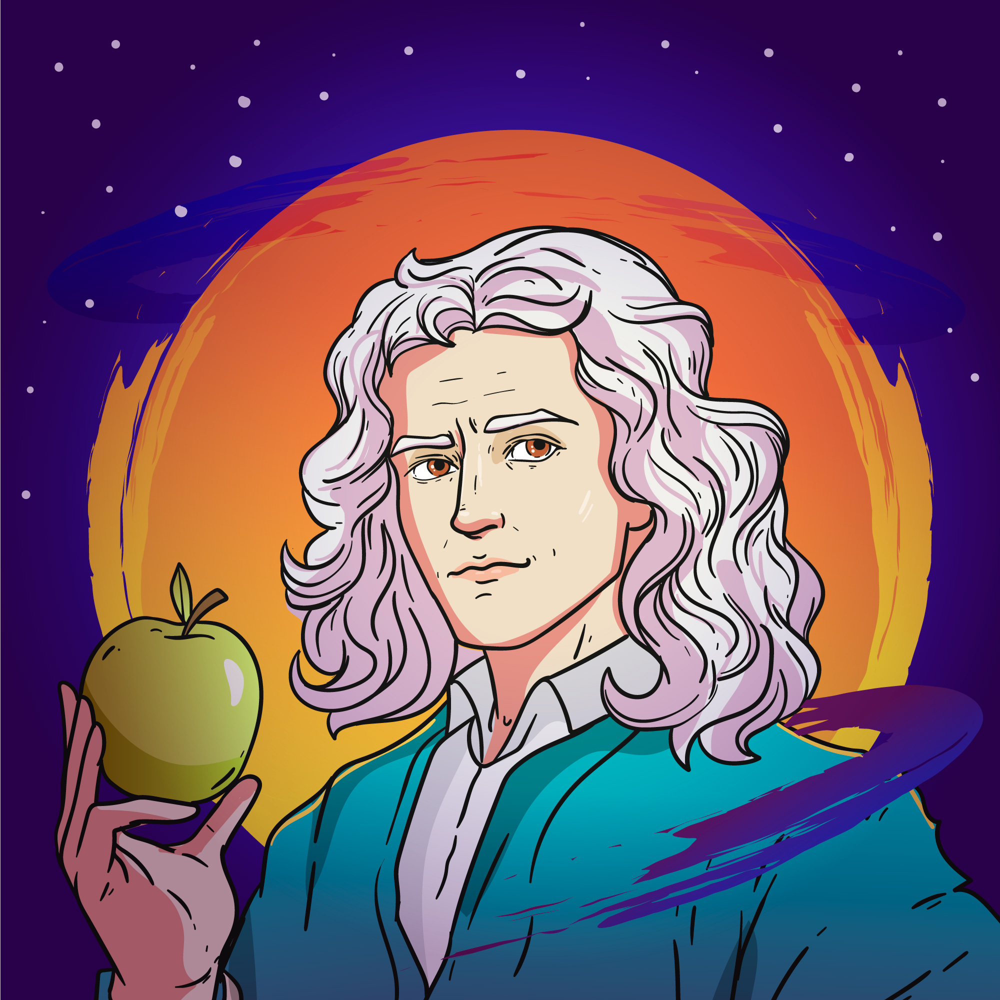

5 bejegyzés
10k követő
10 követés
Felhasználónév: Isaac Newton
Szlogen: "Ami nem mozog, az nem mozog", "Az igazság mindig az egyszerűségben rejlik, sohasem a bonyolult vagy összekavart dolgokban"
Foglalkozás: fizikus, matematikus, filozófus, feltaláló
Hobbik: Alkímia, barkácsolás
Bemutatkozás: Sziasztok az én nevem Newton és híres fizikus vagyok, a modern fizika atyja is. A gravitációval és fizikával foglalkozom és ennek törvényeivel dolgozom. Szeretem érteni, hogyan mozog a világmindenség minden egyes darabkája. És nekem köszönhető, hogy miért színek a szivárvány.